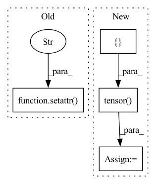

Pattern ID :25547
Before Change
final_scores = torch.cat(final_scores)
setattr(interaction, "pos_len_list", pos_len_list)
setattr( interaction, "user_len_list" , list(np.add(pos_len_list, neg_len_list)))
return interaction, final_scores
@torch.no_grad()After Change
tmp_len_list = np.add(pos_len_list, neg_len_list).tolist()
extra_len_list = np.subtract(self.tot_item_num, tmp_len_list).tolist()
padding_nums = self.tot_item_num * len(tmp_len_list) - np.sum(tmp_len_list)
padding_tensor = torch.tensor([ -np.inf, device=self.device) .repeat(padding_nums)
padding_scores = torch.split(padding_tensor, extra_len_list)
final_scores = list(itertools.chain.from_iterable(zip(pos_scores, neg_scores, padding_scores)))
final_scores = torch.cat(final_scores)In pattern: SUPERPATTERN
Frequency: 3
Non-data size: 4
Instances Fragment ID: 77729650
Project Name: rucaibox/recbole
Commit Name: 1a8d4d24d3eb122e747eacf9846d338fcc9044d7
Time: 2020-09-28
Author: 1337990880@qq.com
File Name: recbox/trainer/trainer.py
M Class Name: Trainer
N Class Name: Trainer
M Method Name: _full_sort_batch_eval(2)
N Method Name: _full_sort_batch_eval(2)
M Parent Class: AbstractTrainer
N Parent Class: AbstractTrainer
M File Name: recbox/trainer/trainer.py
N File Name: recbox/trainer/trainer.py
M Start Line: 214
M End Line: 240
N Start Line: 214
N End Line: 246
Before Change
module.register_parameter("bf", torch.nn.Parameter(bias))
module.register_buffer("zeros", torch.zeros(1, 1, *shape[2:], dtype=bias.dtype, device=module.weight.device))
setattr(module, "zero_cache", module.zeros)
setattr( module, "idxs_cache" , module.idxs)
return module
def forward(self, x):After Change
def from_bn(module: nn.BatchNorm2d, idxs: torch.Tensor, bias, shape):
module.__class__ = BatchNormExpand
select_idxs = []
current = 0
for i in range(bias.shape[0]):
if i in idxs:
select_idxs.append(current)
current += 1
else:
select_idxs.append(module.weight.shape[0])
select_idxs = torch.tensor( select_idxs)
module.register_buffer("idxs", idxs.to(module.weight.device))
module.register_buffer("select_idxs", select_idxs.to(module.weight.device))
module.register_parameter("bf", torch.nn.Parameter(bias)) Fragment ID: 77729655
Project Name: eidoslab/simplify
Commit Name: 20f2d560394960f91d131408660f14299acf9c1d
Time: 2021-07-08
Author: carlo.alberto.barbano@outlook.com
File Name: simplify/layers.py
M Class Name: BatchNormExpand
N Class Name: BatchNormExpand
M Method Name: from_bn(4)
N Method Name: from_bn(4)
M Parent Class: nn.BatchNorm2d
N Parent Class: nn.BatchNorm2d
M File Name: simplify/layers.py
N File Name: simplify/layers.py
M Start Line: 99
M End Line: 101
N Start Line: 87
N End Line: 98
Before Change
module.register_buffer("zeros", torch.zeros(1, *bias.shape, dtype=bias.dtype, device=module.weight.device))
setattr(module, "use_bf", bias.abs().sum() != 0)
setattr( module, "zero_cache" , module.zeros)
setattr(module, "idxs_cache", module.idxs)
return module
After Change
def from_conv(module: nn.Conv2d, idxs: torch.Tensor, bias):
module.__class__ = ConvExpand
select_idxs = []
current = 0
for i in range(bias.shape[0]):
if i in idxs:
select_idxs.append(current)
current += 1
else:
select_idxs.append(module.weight.shape[0])
select_idxs = torch.tensor( select_idxs)
module.register_buffer("idxs", idxs.to(module.weight.device))
module.register_buffer("select_idxs", select_idxs.to(module.weight.device))
Fragment ID: 77729652
Project Name: eidoslab/simplify
Commit Name: 20f2d560394960f91d131408660f14299acf9c1d
Time: 2021-07-08
Author: carlo.alberto.barbano@outlook.com
File Name: simplify/layers.py
M Class Name: ConvExpand
N Class Name: ConvExpand
M Method Name: from_conv(3)
N Method Name: from_conv(3)
M Parent Class: nn.Conv2d
N Parent Class: nn.Conv2d
M File Name: simplify/layers.py
N File Name: simplify/layers.py
M Start Line: 39
M End Line: 43
N Start Line: 26
N End Line: 37